АЛГЕБРА МАТРИЦ
Основные определения
Определение. Матрица — это таблица, состоящая из n строк
и k столбцов.
Матрицы обозначаются большими буквами латинского
алфавита. Элементы матрицы обозначаются соответствующими малыми буквами с индексами. Первый индекс указывает
номер строки, второй номер столбца. Например, a23 — элемент
матрицы A, стоящий во второй строке и третьем столбце. Все элементы матрицы заключаются в круглые скобки; n и k называются
размерами матрицы.
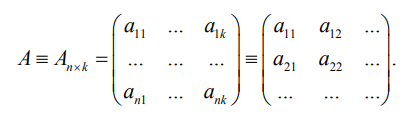
Пример 1.1.Объем продаж.
Владелец двух торговых точек, продающих крупы, решил
выяснить, каков в них объем продаж риса, пшена и гречи. Информацию об этом можно оформить в виде таблицы:
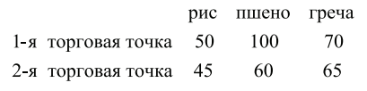
Таким образом, получилась матрица
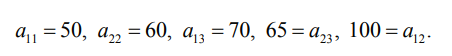
Через обозначают элемент матрицы A, стоящий в i‑й строке
и j-м столбце.
Определение. Квадратная матрица — это матрица, у которой
число строк равно числу столбцов.
Пример 1.2
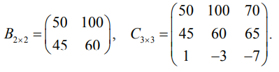
Обычно при указании размерности квадратной матрицы
пишут только один индекс, т. е.
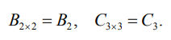
Определение.Элементы квадратной матрицы, имеющие одинаковые индексы a
11,a
22,a
33,...,a
nn, называются диагональными
элементами. Они образуют главную диагональ матрицы.
Определение. Диагональной матрицей называется такая
квадратная матрица, у которой все недиагональные элементы
равны нулю.
Пример 1.3
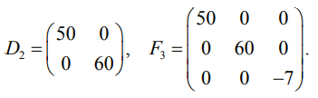
Определение. Единичной матрицей называется такая диагональная матрица, у которой все диагональные элементы равны
единице.8
Пример 1.4
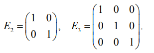
Определение. Следом матрицы называется сумма всех диагональных элементов:
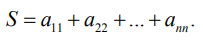
Пример 1.5. След матриц B и D равен S = 50 + 60 = 110, след
матриц C и F равен S = 50 + 60 − 7 = 103.
Определение. Матрица A
T
называется транспонированной
к A, если каждая строка матрицы A
T
получается из соответствующего столбца матрицы A.
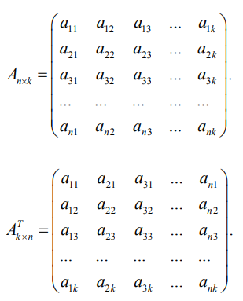
Очевидно, что число строк матрицы A
T
равно числу столбцов матрицы A, число столбцов матрицы A
T
равно числу строк
матрицы A.
Пример 1.6. Найти матрицу A
T, если
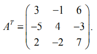
Определение. Матрица, состоящая из одного столбца, называется вектор-столбец:
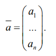
Определение. Матрица, состоящая из одной строки, называется вектор-строка:
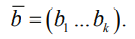
Операции над матрицами
Рассмотрим следующие задачи.
Задача 1. Пусть
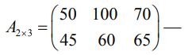
объем продаж за первые две недели января,
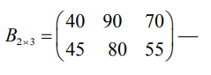
объем продаж за последние две недели января.
Требуется найти C
2×3
— объем продаж за январь.
Очевидно, для решения задачи нужно сложить элементы
матриц A и B, стоящие на одинаковых местах. Получим
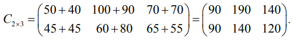
Эта операция называется сложением матриц.
1. Сложение матриц.
Пусть
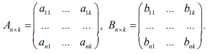
Матрица
С
n×k
называется суммой этих матриц, т. е. С = A + B,
если
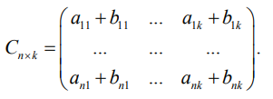
Заметим, что складывать можно только матрицы одинаковой
размерности.
Аналогично определяется разность матриц A и B.
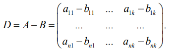
Задача 2. Пусть
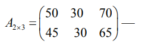
цены на крупы в двух торговых точках в январе. В феврале все
цены увеличились вдвое. Найти матрицу цен в феврале.
Ясно, что каждый элемент матрицы A нужно умножить на 2.
Получим
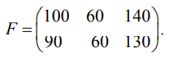
Операция называется умножением матрицы на число.
2. Умножение матрицы на число.
Пусть
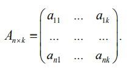
Матрица F
>n×k
называется произведением матрицы A на
число q, т. е. F = qA, если
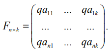
Пример 1.7
Найти С=-2A-3B
T+4E, если
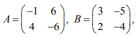
а Е — единичная матрица.
Решение
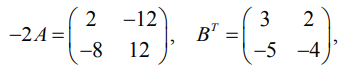
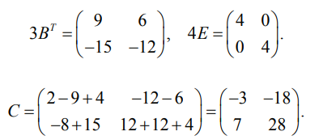
Задача 3. Пусть
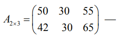
цены на крупы рис, пшено и гречу в двух магазинах. Две старушки
решают, могут ли они пойти в магазин вместе, если первой нужно
купить: риса — 1 кг, пшена — 0,5 кг, гречи — 0,5 кг, а второй:
риса — 0,5 кг, пшена — 2 кг, гречи — 1 кг. При этом каждая выбирает тот магазин, где нужно потратить меньшую сумму.
Решение. Запишем информацию о покупках в таблицу:
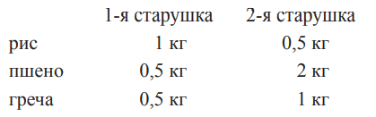
По этой таблице составим матрицу:
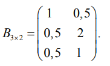
Очевидно, если мы умножим первую строчку матрицы A на
первый столбец матрицы B, то узнаем, сколько денег первой старушке придется заплатить за покупку в первом магазине:
Первой старушке придется заплатить за покупку во втором
магазине:
Второй старушке придется заплатить за покупку в первом
магазине:
Второй старушке придется заплатить за покупку во втором
магазине:
Получилась новая таблица:
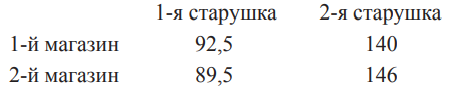
и новая матрица:
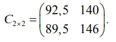
Она является произведением матриц A и B, т. е.
Мы видим, что старушки не смогут пойти вместе, так как
первой старушке выгоднее сделать покупки во втором магазине,
а второй старушке — в первом.
3. Умножение матриц.
Матрица C
n×m называется произведением матрицы A
n×k на
матрицу B
k×m, т. е. C = AB, если элемент c
ij матрицы C
n×m равен
сумме произведений элементов i-й строки матрицы A
n×k на соответствующие элементы j-го столбца матрицы B
k×m, т. е.
cij=ai1b1j+ai2b2j+...+aikbkj, i=1,...,n, j=1,...,m
Заметим, что не любые матрицы A и B можно перемножать. Число столбцов матрицы A должно равняться числу строк
матрицы B. Из того, что произведение AB существует, не следует,
что существует BA. Даже если BA существует, AB может быть не
равно BA.
Пример 1.8
Найти C = AB, если
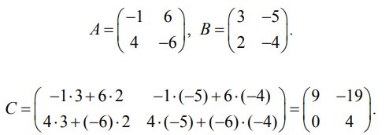
Вопросы. Можно ли перемножить A на B, B на A, A на C,
C на A, B на C, C на B, если
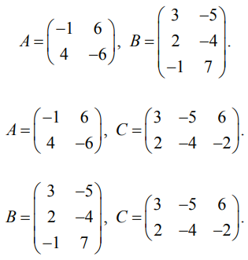
Какова размерность произведений?